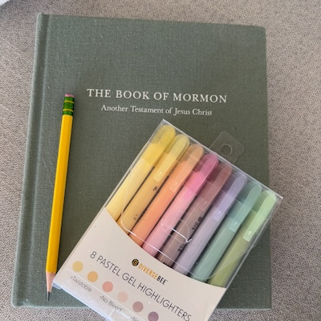

"Jesus increased in wisdom and stature, and in favor with God and man." - John 2:52
Scriptures
The following are some of my favorite scriptures and scripture stories for different situations in life:
Jesus is the Christ:
- Isaiah 59 - Jehovah saves mankind who repent and come to Him
- Isaiah 53 - "Wounded for our trangressions, with His stripes we are healed..."
- Isaiah 54 - "With everlasting kindness will I have mercy on thee..."
Comfort:
- Isaiah 61:10 - Fear Not, I am with thee
- Romans 8:31 - With God who can be against us?
Courage/Confidence:
- D&C 6:36 - Look unto Me in every thought; doubt not, fear not
- Proverbs 3:5-6 - Trust in the Lord... He will direct your paths
- Phillipians 4:13 - I can do all things through Christ which strengtheneth me.
Covenants:
- D&C 84:20-21 - In the ordinanaces, the power of godliness in manifest
- D&C 84:88 - I will go before you , be on your right hand and left, my angels round about you to bear you up.
- Isaiah 54: 7-8,10; 3 Nephi 22:7-8,10 - My kindness shall not depart from thee
Identity:
- 3 Nephi 5:13 - "I am a disciple of Jesus Christ"
- Isaiah 52 - "Awake...put on thy strength...Shake thyself from the dust; arise and sit down..."